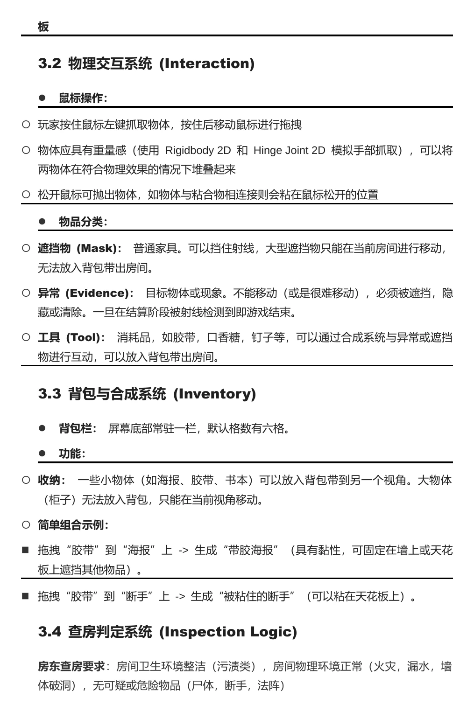
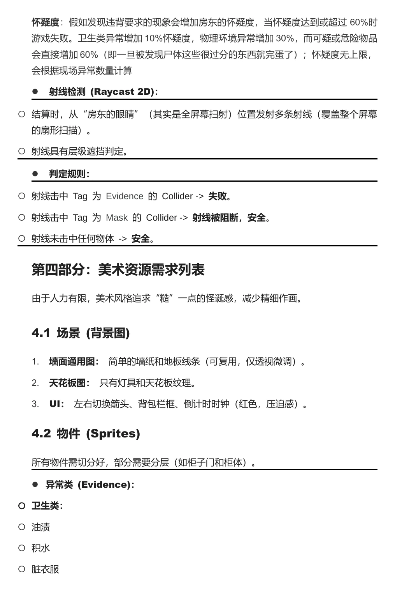

房东即将查房
在有限时间内，把房间里的异常隐藏起来。家具、海报、地毯都能成为遮挡物，整理后的房间需要经得住检查。
在房东查房前，利用家具堆叠、视角遮挡与胶带掩盖房间里的异常。

在有限时间内，把房间里的异常隐藏起来。家具、海报、地毯都能成为遮挡物，整理后的房间需要经得住检查。
拖拽物品、堆叠家具，利用重力、遮挡和固定工具解决现场问题。切换不同墙面，为同一件物品寻找合适的位置。
Global GameJam 2026 中国区作品，来自线下北京 ACG 站点。以 Mask 为主题，把物理遮罩和“看起来正常”的伪装结合起来。固定房间视角与查房结算让整理行为有明确目标。
点击摘页查看完整尺寸。

